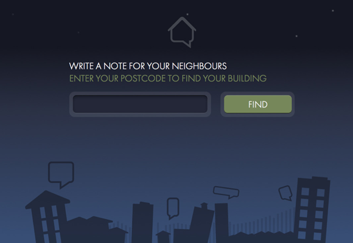
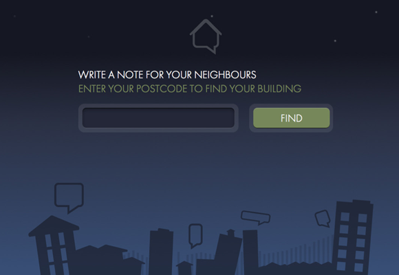

- Ravensbourne
- Graduates 2011
- Product Design
- Interaction Design
- Seyedeh Mahya Damigah
- BA (Hons) Product Design
- s.damigah@hotmail.com
- sm-damigah.co.uk
- +44 (0) 7886 863 504
- "I am highly imaginative, very productive as well as experimental. Strong minded and a risk taker with a soft spot."
 

- Sensei Bungi
This unique toy is equipped with a sensor allowing parents to get the water temperature right for their child’s bath. This prevents any chance of a burn injury to the child. The product is either hung under the shower or placed in the bath. The toy changes in color, which will inform the parent how suitable the water temperature is. If the toy turns red this represents that the water is too hot, if blue it’s too cold and if yellow the water temperature is perfect.
The toy is rechargeable as it has a charging dock. The mid part is made out of goo held together with silicon, however ABS is used for the legs and head.
The child can also use this toy as a bedside lamp that sits on the dock next to the bed. The light gradually turns off, this eases the child into sleep but also helps to avoid any thoughts of monsters etc.
In the morning the toy turns on which then alerts the child and wakes them up slowly. The main aim of this product is to encourage a sensible and safe routine during bedtime.